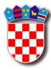
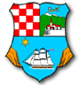
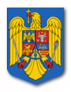
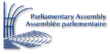
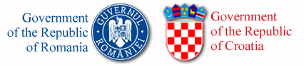
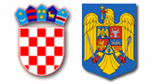

|
The IstroRomanian community is not recognized in the Constitution of the Republic of Croatia as one of the country's official national minorities. The Constitution does stipulate in its "Historical Foundation" section the existence of Romanians, Vlachs and others as members of its national minorities.
The community enjoys, however, a degree of recognition at the local level and is specifically identified and named in the regional charter of Istria County and in the official statutes of the various communities their villages belong to.
The IstroRomanian community is also the subject of several laws passed by the Romanian Parliament, including the Constitution of the country. These laws address broadly the situation of what the Romanian state defines as “Romanians Abroad” - an all encompassing term which includes both Romanians and “linguistic minorities” that live in neighboring countries, as well as the more recent Romanian diaspora from throughout the globe.
Lastly, the IstroRomanian community has been the subject of a number of international treaties and documents including a specific motion on its situation submitted to the Council of Europe Parliamentary Assembly.
Listed below are excerpt from the various official documents that recognize, regulate, and promote the status of the IstroRomanian community.

Croatian Constitution
Full text: Hrvatski | English
Historical Foundations
Setting forth from these historical facts and the universally accepted principles governing the contemporary world and the inalienable and indivisible, non-transferable and perpetual right of the Croatian nation to self-determination and state sovereignty, including the inviolable right to secession and association as the fundamental conditions for peace and stability of the international order, the Republic of Croatia is hereby established as the nation state of the Croatian nation and the state of the members of its national minorities: Serbs, Czechs, Slovaks, Italians, Hungarians, Jews, Germans, Austrians, Ukrainians, Rusyns, Bosniaks, Slovenians, Montenegrins, Macedonians, Russians, Bulgarians, Poles, Roma, Romanians, Turks, Vlachs, Albanians and others who are its citizens and who are guaranteed equality with citizens of Croatian nationality and the exercise of their national rights in compliance with the democratic norms of the United Nations and the countries of the free world.[...]
Protection of Human Rights and Fundamental Freedoms
Article 14
All persons in the Republic of Croatia shall enjoy rights and freedoms, regardless of race, colour, gender, language, religion, political or other conviction, national or social origin, property, birth, education, social status or other characteristics.
All persons shall be equal before the law.
Article 15
Equal rights for the members of all national minorities in the Republic of Croatia are guaranteed.
Equality and protection of the rights of national minorities shall be regulated by a constitutional act to be enacted under the procedure stipulated for organic law.
Over and above general suffrage, the right of the members of national minorities to elect their representatives to the Croatian Parliament may be stipulated by law.The freedom of the members of all national minorities to express their nationality, to use their language and script, and to exercise cultural autonomy shall be guaranteed.
Statute of the Istria County
Full text: Hrvatski | English | Italiano
Chapter III. Protection of Autochthonous, Ethnic, and Cultural Characteristics
Article 21
The Istrian Region promotes social, physical, ethnic, cultural, and other characteristics of Istria.
The Istrian Region promotes Istrian national customs, marking national holidays, protection of autochthonous toponyms, and the preservation of local dialects (Chakavian, Cakavian, Cokavian, Cekavian, Kajkavian, Istriorian, Istro-Venetian, Istro-Romanian, and other) through education about the homeland and other contents. [...]
Article 22
The Istrian Region provides for the protection against any activity that can threaten multicultural and multiethnic characteristics of Istria.

Statute of the Primorje-Gorski Kotar County
Full text: Hrvatski
Chapter III. Scope of the County Government
Article 22
The County encourages and ensures the conditions for the advancement and nurturing, supports free speech and research of the historical and socio-cultural traditions, customs, and dialects of smaller local units in its composition.
Article 23
In the scope of its jurisdictions, the County shall takes measures to improve the conditions needed for members of national minorities, in order to conserve and develop their culture, as well as preserving important components of their independence, with respect to their religion, language, tradition and cultural heritage.
Article 24
Serbs, Italians, and members of other national minorities considered indigenous on the territories of those municipalities and towns that are part of the County, are to determine their statutes based on their historical presence.
Statute of the Municipality of Kršan
Full text: Hrvatski
Preamble
Citizens Office Kršan exercise their rights and freedoms without distinction as to race, color, sex, language, religion, political or other opinion, national or social origin, association with a national minority, property, birth, education, social status, status from birth or other characteristics.
The statute of the Municipality Kršan as the fundamental law, states the obligation to respect all citizens of the Municipality of Kršan, and to respect and protect minority rights and the freedom of expression and multicultural diversity of ethnic groups, especially the indigenous ethnic and linguistic group of IstroRomanians whose members still live in the municipality of Kršan.

Constitution of Romania
Full text: Romanian | English
Title I: General Principles
Article 7
The State shall support the strengthening of links with the Romanians living abroad and shall act accordingly for the preservation, development and expression of their ethnic, cultural, linguistic and religious identity, with the observance of the legislation of the State whose citizens they are.
Parliament of Romania
Full text: Romanian
Law 176 of 2013
Sole Article
In paragraph (1) of article 1 of Law no. 299/2007 in support of Romanians abroad, republished in the Official Journal of Romania, Part I, no. 261 of April 22, 2009, as amended and subsequently supplemented, letter a) is amended to read as follows:
"a) the rights of people who freely state a Romanian cultural identity - persons of Romanian origin and who belongs to the Romanian linguinstic and cultural vein, Romanians who live outside the borders of Romania, regardless of how they are called (Armani, Armanji , Aromanians, Bessarabians, Bukovinans, Cutovlahs, Daco-Romanians, Farsherots, Hertans, Istro-Romanians, Latin Danubians, MacedoRomanians, Macedo-Romanians, Maramuresans, Meglens, Megleno-Romanians, Moldavians, Moldovlahs, Rramani, Rumni, Valachs, Vlachs, Vlasi, Volons, Macedo-Armanji and all other semantical related forms to the above), referred from now on as Romanians abroad"

Council of Europe Parliamentary Assembly
Full text: English | French
Difficult cultural situation of the Istro-Romanian minority particularly threatened
Motion for a resolution presented by Mr Vlad Cubreacov and others
Having ascertained that the Istro-Romanian minority inhabits eight villages (Having ascertained that the Istro-Romanian minority inhabits eight villages (Žejane/Jeiăni, Brdo/Bârda, Jesenovik/Sucodru, Nova Vas/Nosela, Kostracani/Costârceani, Šušnjevica/Șușneviță/Susgnevizza, Letaj and Zankovci) in the Peninsula of Istria (Croatia), on the Northern part of the Adriatic Sea, in the historical region of Ciceria and that this minority is not officially recognised by Croatia;
Also having ascertained that after the World War II an Istro-Romanian diaspora was established in Italy, Trieste region, and that small communities of Istro-Romanian origin inhabit Golac and Polijane localities in Slovenia, on the Northern part of the historical region of Ciceria;
Recalling the inland nature of the Istro-Romanian minority on the territory it inhabits historically for centuries;
Noting that the Istro-Romanian, quoted in the UNESCO Red Book of Endangered Languages as "seriously endangered", is an historical Romanian dialect spoken by a population of between 500 and 1 500 persons that call themselves by endonyme Rumâni/Rumâri/Rumeri (Romanians) and being called by exonym Ćiribiri or Ćići by Croats, Slovenians and Italians, and Istro-Romanians by linguists;
Taking into account that between 1921 and 1925 the Traian Emperor School operated in Šušnjevica/Șușnevița village where the school subjects have been taught in the Istro-Romanian dialect and in literary Romanian language, and this school was established by Mr. Andrei Glavina, an Istro-Romanian professor;
Taking note of the fact that during the last years the Istro-Romanian Association "Andrei Glavina" has published in Trieste (Italy), by its own means, a journal called Scrisore către fraț rumeri (Letter for Romanian brothers);
Noting with satisfaction that it was possible to organise the first Istro-Romanian Congress at Pula University in spring 2000;
Regretting that the Istro-Romanians, as an officially unrecognised minority, do not benefit of any public education, any religious assistance and do not have any written press or broadcast media in their own language;
Being concerned for the continuous decrease of the number of Istro-Romanians due to their assimilation by neighbouring nationalities, as regards a minority seriously threatened by disappearance;
Assessing that this worrisome and even critical situation does not comply with the Council of Europe norms and standards;
Taking into account the commitments taken by the Council of Europe member states towards the minorities, as well as the rights and commitments of the kin-states towards their minorities abroad,
The Assembly,
Invites Croatian authorities to recognise officially the Istro-Romanian minority and to ensure the respect for its fundamental rights and freedoms enshrined in the European Convention of Human Rights and namely the linguistic, cultural and religious rights, especially in the following fields:
- education in its mother tongue;
- worship services in its mother tongue;
- newspapers, journals, radio and TV broadcasts in its mother tongue;
- and support for Istro-Romanian cultural associations;
Invites the authorities of Romania, as a kin-state, to co-operate with Croatian authorities in order to take urgently all necessary measures to preserve the identity of the Istro-Romanian minority, especially threatened and to support the least spoken Istro-Romanian dialect;
Invites Croatian authorities to consider the possibility for implementing, through the most appropriate means, the following measures:
- gradual implementation of the mother tongue in the children education (to use verbally the Istro-Romanian dialect in the preschool education and the normalized Romanian forms of the mother tongue in the primary education);
- respect and public aid for the local use of the Istro-Romanian dialect and the normalized Romanian language, and their current use in the second level education and by media in the concerned localities, in the extent the communities that speak them need;
- permit to hold worship services in the Istro-Romanian dialect and in the normalized Romanian language in churches situated in the Istro-Romanian villages, in order to give the Istro-Romanians the possibility to sing canticles in their mother tongue;
- organisation of international discussion forums and expert seminars to study and identify properly the features of the Istro-Romanian dialect and culture;
Empowers its competent committee to put on the agenda of its forthcoming meetings the issue of the endangered Istro-Romanian minority, to watch closely the development of its situation and to submit a Report concerning this issue.
Council of Europe Parliamentary Assembly
Full text: English | French
The European Charter for Regional or Minority Languages Report
4. Implementation of the charter: analysis of replies received to the questionnaire
4.5. The situation of the Istro-Romanian minority in Croatia: example of the need for protection of languages
53. In its reply to the questionnaire concerning the European Charter for Regional or Minority Languages, Croatia did not mention the Istro-Romanian minority. It does not regard the Istro-Romanian language as falling within the scope of application of the charter. The Istro-Romanian minority group, which is said to consist of 500 to 1 500 members inhabiting eight villages in Istria (Croatia), has not been officially recognised by Croatia.
54. On 12 October 2006, Croatia presented its third periodical report on the European Charter for Regional or Minority Languages. In its evaluation report, the committee of experts expressed that it would welcome information about the Istro-Romanian language in the next periodical report. In reply to this request, the Croatian authorities, in their comments on the third periodical report, declared the following: "As regards the Istro-Romanian language we have the pleasure to inform you that in September 2007 the Ministry of Culture rendered a decision by which the Istro-Romanian language was given the status of non-material cultural wealth, and as such is registered in the Register of Cultural Wealth of the Republic of Croatia – the list of Protected Cultural Wealth. In this way, too, care has been demonstrated by which Croatia approaches the protection of all cultural diversities, including the protection of minority languages."
55. The protection of the Istro-Romanian language, which is apparently threatened with extinction, therefore requires further attention. Official recognition of the Istro-Romanian minority by Croatia and its protection under the Charter for Regional or Minority Languages are necessary in order to ensure the full protection of this language. I hope that the forthcoming report of the committee of experts will take this into consideration.

Agreement on Cooperation in Education, Culture and Science between the Government of Romania and the Government of the Republic of Croatia
Full text: Romanian
Article 4
The Parties shall pay special attention to the need to fully meet the needs in terms of education and culture of the Romanian minority living in Croatia and the Croatian minority living in Romania, especially in the field of Romanian and Croatian language and literature and protect each other their cultural and historical heritage.
For this purpose, special programs will be completed and will be agreed forms of cooperation between the institutions of the two countries, taking into account the suggestions of these minorities by:
- Sending experts and teachers;
- Sending books and supplies to school libraries;
- Organizing seminars;
- Awarding grants and scholarships, etc.

Treaty on Friendship and Cooperation between the Republic of Croatia and Romania
Full text: Romanian
Article 17
Contracting parties shall provide on each other's territory, protection and all the rights to the persons belonging to the Romanian national minority in the Republic of Croatia and to the Croatian national minorities in Romania, according to documents the Conference on Security and Cooperation in Europe, the international conventions ratified by the two Contracting Parties and the generally recognized rules of international law.
Belonging to a national minority shall not relieve persons mentioned in the preceding paragraph of the duty to be loyal to the State of which they are citizens and to respect its national law, on equal terms with the citizens of each of the contracting party.
The contracting parties undertake to implement in good faith the international standards on the protection of the ethnic, cultural, linguistic and religious identity of persons belonging to national minorities and to take no action that would be contrary to the spirit and letter of this Treaty.
Each contracting party undertakes not to permit the exercise of the right of association of persons belonging to national minorities to be used against the interests of the other contracting party.
|